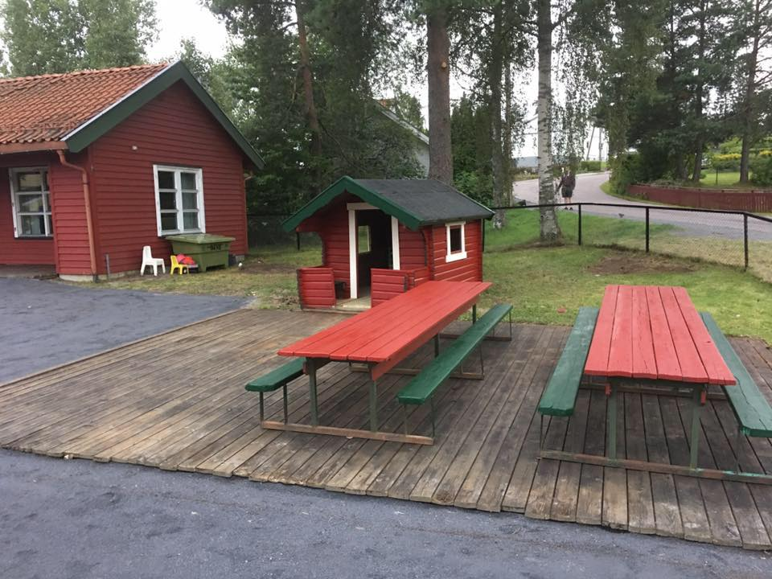

FORENINGEN BIKUBEN BARNEPARK
Bikuben Barnepark
Et grønt møtested for lek, samvær og nærmiljø på Høybråten.
Om barneparken
En park for nabolaget
Bikuben Barnepark ligger på Høybråten i bydel Stovner. Foreningen jobber for å gjøre parken mer tilgjengelig for folk i området, i samarbeid med Oslo kommune.
Historie
Et kjent sted på Høybråten
Oslo Byleksikon skriver at veien Bikuben ble oppkalt etter en lekeplass som Anton Tschudi ga til Høybråtens befolkning. Navnet viser til en bikube, symbolet til Oslo Arbeidersamfunn.
Praktisk informasjon
Lek og samvær i nærmiljøet
KlimaOslo omtaler Bikuben som en tidligere barnepark som ble oppgradert i 2025. De beskriver et område med god plass til frilek, piknik og små barn som vil utforske trygt.
- Adresse
- Høybråtenveien 69, 1086 Oslo
- Status
- Tidligere barnepark, oppgradert som lekeplass i 2025
- I parken
- Steinlabyrint, plantetunell, benker og fellesgrill
- Tilbud
- Lekeplass og nærmiljøpark
- Foreningen
- Jobber for mer tilgjengelig bruk av parken
Foreningen
FORENINGEN BIKUBEN BARNEPARK
Foreningen arbeider for sosialt samvær og aktivitet i Bikuben Barnepark på Høybråten.
Organisasjonsnummer: 934371275
Adresse: Høybråtenveien 69, 1086 Oslo
Kilder